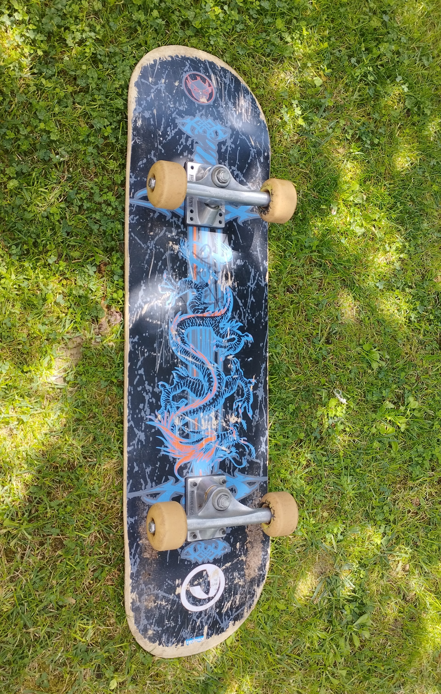
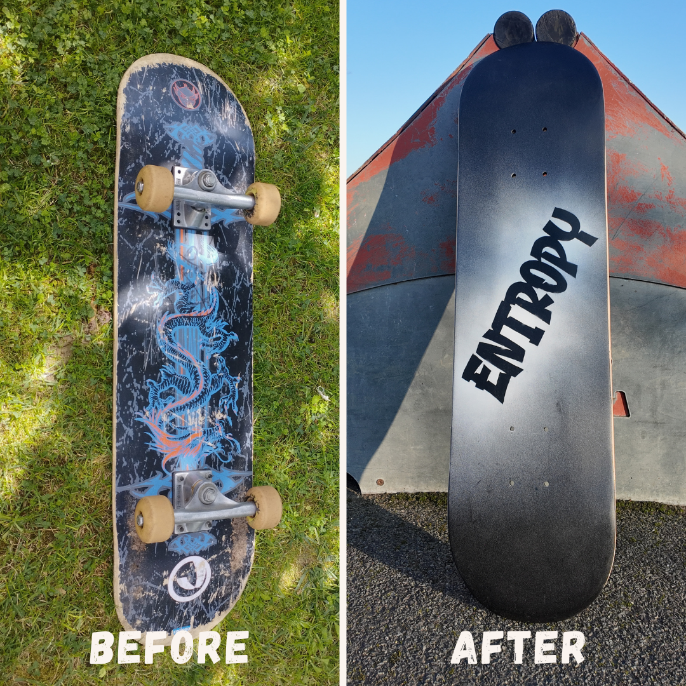

Entropy
Un fond noir, une trace blanche, et le désordre comme langage..
Source d’inspiration
Le mot entropie (Entropy en anglais) m’a toujours profondément marqué. D’abord par sa sonorité, brute et presque abstraite, puis par sa signification physique.
Pour faire simple, en physique, l’entropie est une mesure du désordre d’un système (du point de vue microscopique). Un désordre qui, par nature, ne peut qu’augmenter (pour un système isolé). L’entropie est toujours positive, toujours en mouvement, toujours irréversible.
Cette idée m’a immédiatement parlé. Parce qu’accepter l’augmentation du désordre, c’est aussi accepter l’imprévu, l’évolution, le changement. C’est refuser le contrôle absolu, les trajectoires figées, les formes parfaitement lisses.
À mes yeux, ce désordre n’est pas un défaut. Il est au contraire un signe de liberté.
Si des scientifiques ou des passionnés de physique venaient à lire ces lignes, je vous prie de ne pas accorder trop d’importance aux hypothèses ou raccourcis utilisés ici pour évoquer le concept d’entropie. Il s’agit avant tout de ma perception personnelle du terme et de son sens dans le cadre de ce projet artistique, et non d’une définition rigoureusement scientifique.
Avant / Après

Sur cette planche, le fond noir représente un état initial, presque stable, uniforme.
Puis la peinture blanche s’en échappe, s’étire, se disperse.
Elle ne cherche pas à remplir l’espace de manière contrôlée, mais à s’en libérer.
Le geste est volontairement simple, presque minimaliste, mais chargé de sens.
Il n’y a pas de motif précis, pas de structure rigide : seulement une trace qui se déploie, comme une manifestation visuelle de l’entropie.

C’est en classe préparatoire que j’ai découvert le concept d’entropie.
Et dès ce moment-là, une idée s’est imposée à moi :
si je devais un jour créer quelque chose, une marque, un projet personnel, ce mot en ferait partie.
EntropyBoards est né de cette évidence.
Ce custom est donc bien plus qu’une planche : c’est un point de départ.

C’est mon tout premier custom.
Il est volontairement sobre, presque radical, mais il concentre tout ce que je voulais exprimer.
Il pose les bases de l’univers EntropyBoards :
le désordre comme moteur créatif,
la liberté comme valeur centrale,
et la matière comme support d’expression.